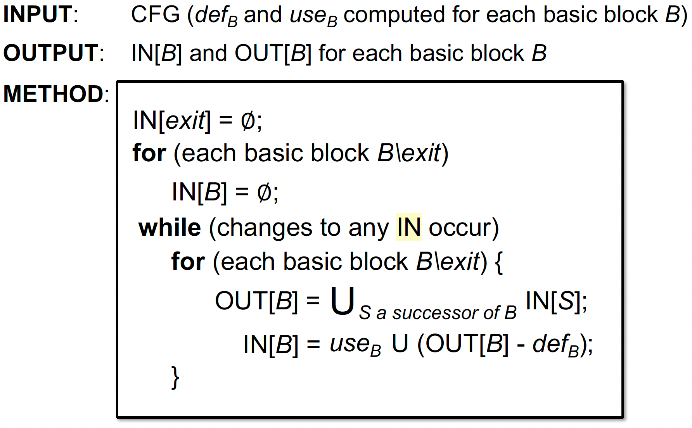
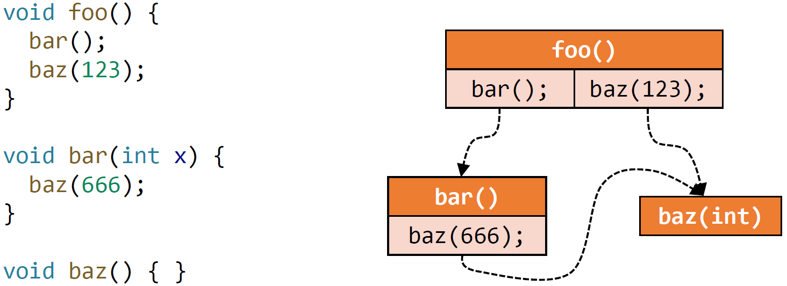

软件分析，学习笔记
教程：
- 南京大学《软件分析 Static Program Analysis》
- https://www.bilibili.com/video/BV1b7411K7P4
- 李樾/谭添，yyds！
网上有些笔记已经非常清楚了，故在其基础上再简单拼凑或加工咯：https://blog.csdn.net/panhewu9919/article/details/106007155、https://github.com/RangerNJU/Static-Program-Analysis-Book 等，感谢如此优秀的笔记们。
Introduction
outline:
- PL 和 Static Program Analysis
- 为什么学这门课？ 对你的帮助？（理解计算机课程，尤其是 PL 方面）
- SPA 是什么
- SPA 的特征和例子
- 教学大纲
复习重点：
- What are the differences between static analysis and (dynamic) testing
- Understand soundness, completeness, false negatives, and false positives
- Why soundness is
usuallyrequired by static analysis - How to understand abstraction and over-approximation
静态程序分析这个方向的定位：
- Background: In the last decade, the language cores had few changes, but the programs became significantly larger and more complicated.
- Challenge: How to ensure the reliability, security and other promises of large-scale and complex programs?
Why We Need Static Analysis?
- Program Reliability
- Null pointer dereference, memory leak, etc.
- Program Security
- Private information leak, injection attack, etc.
- Compiler Optimization
- Dead code elimination, code motion, etc.
- Program Understanding
- IDE call hierarchy, type indication, etc.
静态分析的定义：
- Static analysis analyzes a program P to reason about its behaviors and determines whether it satisfies some properties before running P.
- Rice 定理告诉我们，对于这些 non-trivial properties，无法给出确切答案
下图中需要理解的概念（下面几个图很重要）：
- Sound, Complete, Overapproximate, Underapproximate
- soundness：对程序进行了 over-approximate 过拟合，不会漏报（有 false positives 误报）
- completeness：对程序进行了 under-approximate 欠拟合，不会误报（有 false negatives 漏报）
- complete表示报告包含的错误都是真实的错误，但可能并未包含全部的错误，造成了漏报；sound表示报告包含了所有的真实错误，但可能包含了误报的错误，导致误报。
妥协 soundness 会有漏报；妥协 completeness 会有误报
为什么需要 soundness：
- Soundness is critical to a collection of important (static-analysis) applications such as compiler optimization and program verification
- Soundness is also preferable to other (static-analysis) applications for which soundness is not demanded, e.g., bug detection, as better soundness implies more bugs could be found
- Static Analysis: ensure (or get close to) soundness, while making good trade-offs between analysis precision and analysis speed.
最后 PPT 给了个简单例子（加减法后正负数分析），将人代入分析器的视角，来说明静态分析的两大内核：
- (Data) Abstraction：对于不同的程序，我们都将其行为/语义抽象到一个指定的域中，之后，我们对定义的域进行分析。
广义来说，是对世间万物规则的理解和抽象 - Safe-approximation (Strategies)：根据程序的语义和要分析的问题，设计 “转换函数”。
广义来说，是在具体问题下，是我们重新设定和 model 的世间运转规则- Transfer Functions
- Control Flows
Intermediate Representation
复习重点：
- The relation between compilers and static analyzers
- Understand 3AC and its common forms
- How to build basic blocks on top of IR
- How to construct control flow graphs on top of BBs
编译原理知识：
- 编译器是一个软件，分为前端和后端两部分，将源代码生成机器码。
- 编译器的前端一般由词法分析，语法分析，语义分析组成，词法分析是将源程序分成一个一个的token，也就是说，需要将字符串流（源程序）切分成一个个小的单元，划分出是关键字还是标识符还是运算符等等，一般用正则表达式来定义规则。语法分析就是将一个个的Token组成句子，它的功能比较受限，但是也能检测出一些错误出来，比如
f(a,b,)这样子的错误，在此阶段构造出AST。语义分析会进行类型检查，构造出修饰后的AST。- 而后端一般分为代码生成和优化相关的操作。那么静态分析和编译器的关系是什么呢？如下图所示，在生成了源代码的中间表示之后可以用静态分析来对代码进行一系列的操作。
AST 与 IR：
- Abstract Syntax Tree、Intermediate Representation
那么为什么静态分析在IR的层面上而不是在AST上面呢？
- IR相比于AST更底层，更接近于机器码，而AST更接近于语法结构。
- IR相比于AST，与语言的关联性更低。
- AST相比于IR会缺少控制流信息，同时IR也会更紧凑
Three-Address Code (3AC)
三地址码（3AC）是一种IR，因为在一条指令最多含有3个地址，所以我们称这样的表示方法为3地址码。
如
- x = y bop z
- x = uop y
- x = y
- goto L
- if x goto L
- if x rop y goto L
Static Single Assignment (SSA)
- 定义：给每一个定义变量一个新的名字，传递到接下来的使用当中，每个变量有1个定义（赋值的目标变量）。
- Give each definition a fresh name
- Propagate fresh name to subsequent uses
- Every variable has exactly one definition
- 优点：
- 唯一的变量名可以间接体现程序流信息，简化分析过程；
- 清楚的Define-Use信息
- 缺点：
- 引入很多变量和phi-function；
- 转换为机器码时效率变低（引入很多拷贝操作）
★Basic Blocks (BB)
- 输入一个程序的若干三地址码，将其划分成几块，每一块是 Basic Block，满足一些性质（比如 entry 和 exit 块智能在程序开始和结束）
- 构造算法：
- 选 leaders
- The first instruction in P is a leader
- Any target instruction of a conditional or unconditional jump is a leader
- Any instruction that immediately follows a conditional or unconditional jump is a leader
- 构造 BB
- A BB consists of a leader and all its subsequent instructions until the next leader
- 选 leaders
Control Flow Graphs (CFG)：
- 控制流边：
- 基本块A的结尾有跳转指令跳转到基本块B；
- 原始指令序列中，B紧跟着A，且A的结尾不是无条件跳转。
Data Flow Analysis
D.F.A. 应用
复习重点：
- 理解三种数据流分析应用，如何设计类似的算法，如何优化
- reaching definitions
- live variables
- available expressions
- 理解数据流分析的共性与区别
- 理解迭代算法并弄懂算法为什么能停止
Safe-approximation:
may analysis：输出可能正确的信息（over-approximation），==注意大多数静态分析都是 may analysis==
must analysis：输出必须正确的信息（under-approximation）
对 may analysis 来说 safe 是 over
对 must analysis 来说 safe 是 under
不同的数据流分析有：
- 不同的 data abstraction
- 不同的 flow safe-approximation strategies，如不同的 transfer functions 和 control-flow handlings
Preliminaries 序言
- 输入/输出状态 Input/Output States
（本质是抽象的数据的状态，如变量的状态） - 数据流分析的结果：每一个程序点对应一个 data-flow value，表示该点所有可能程序状态的一个抽象。例如，我只关心x、y的值，抽象表示x、y所有可能的值的集合（输入/输出的值域/约束）就代表了该程序点的程序状态。
Forward Analysis 前向分析：按程序执行顺序的分析。$OUT[s]=f_s(IN[s]) $，s 是 statement
Backward Analysis 反向分析：逆向分析。$IN[s]=f_s(OUT[s]) $
控制流约束：约束求解做的事情，推断计算输入到输出，或反向分析
以下介绍的数据流分析暂不涉及（都在后面的课介绍）：
- Method Calls 方法调用，即暂只处理 Intra-procedural CFG
- Aliases 别名。假设不存在两个变量指向内存中同一个地址
Reaching Definitions Analysis
Reaching Definitions：
定义：
A definition d at program point p reaches a point q
if there is a path from p to q such that d is not “killed” along that path给变量v一个定义d，存在一条路径使得程序点p能够到达q，且在这个过程中不能改变v的赋值
应用：detect possible undefined variables
用来分析未定义的变量。例如，我们在程序入口为各变量引入一个 dummy 定值。当程序出口的某变量定值依然为 dummy，则我们可以认为该变量未被定义。程序中间用到了，就得报 undefined error 啦。特点：
- may analysis / over-approximation
- forward
Transfer Function:
- $\text{OUT[B]} = gen_B \cup (\text{IN[B]} - kill_B) $
- gen 的是新的 definition
- kill 的是其他 Basic Block 里定义 v 的 definitions（如对于一条赋值语句
D: v = x op y，该语句生成了 v 的一个定值 D，并杀死程序中其它对变量 v 定义的定值）
Control Flow:
- $\text{IN[B]} = \cup_{P\ \text{a predecessor of B}}\ \text{OUT[P]} $
算法：
* 为什么在第 2 行要排除 entry，和第一行结合一下不香吗？ —— 这是一个数据流分析的算法模板，它可以不仅适用于 Reaching Definition * 为什么会终止？ —— OUT[S] never shrinks 收缩且状态是有限的（到达不动点）一个运行实例的最终结果（看不懂就回去看 PPT）：
这里的数据抽象是 BitVector（每个 bit 表示某个 definition 是否在当前还有用），在 Tai-e 实现是 Set。理解这个 Fact 的流转即可，表现形式是次要的。
Live Variables Analysis
Live Variables：
定义：
Live variables analysis tells whether the value of variable v at program point p could be used along some path in CFG starting at p. If so, v is live at p; otherwise, v is dead at p.某程序点p处的变量v，从p开始到exit块的CFG中是否有某条路径用到了v，如果用到了v，则v在p点为live，否则为dead。其中有一个隐含条件，在点p和引用点之间不能重定义v。
应用：可用于寄存器分配，如果寄存器满了，就需要替换掉不会被用到的变量
特点：
- may analysis / over-approximation
- backward
Control Flow:
- $\text{OUT[B]} = \cup_{S\ \text{a successor of B}} \text{IN[S]} $
Transfer Function:
- $\text{IN[B]} = use_B \cup (\text{OUT[B]} - def_B) $
- use 是指那些被用到，且用之前在本 basic block 没有被重定义过的变量
- def 是指在本 basic block 中重定义的变量
- 一个例子，便于理解：
算法：
一个运行实例的最终结果（看不懂就回去看 PPT）：
这里的数据抽象是 BitVector（每个 bit 表示某个 Variable 在未来是否还 live）
Available Expressions Analysis
Available Expressions：
定义：An expression
x op yis available at program point p if- all paths from
the entrytopmust pass through the evaluation ofx op y, and - after the last evaluation of
x op y, there is no redefinition ofxory
程序点p处的表达式
x op y可用需满足2个条件，一是从 entry 到 p 点必须经过x op y，二是最后一次使用x op y之后，没有重定义操作数 x、y。（如果重定义了 x 或 y，如 x =a op2 b，则原来的表达式x op y中的x或y就会被替代）- all paths from
应用：用于优化，检测全局公共子表达式
特点：
- must analysis / under-approximation
- forward
Transfer Function:
- $\text{OUT[B]} = gen_B \cup (\text{IN[B]} - kill_B) $
- gen：基本块求值 x op y，且之后没有对 x 或 y 赋值
- kill：基本块对 x 或 y 赋值，且没有重新计算 x op y（如果重新计算，即使值不一样，也属于 gen）
- 问题：该分析为什么属于 must analysis 呢？
- 因为我们允许有漏报，不能有误报
- 比如以下示例中，改为去掉 $b=e^{16}*x $，该公式会把该表达式识别为不可用，即在 $c = …$ 处不做优化。
- 尽管这个式子在下面可能是 available 的，比如当 x=… 是重赋值，但是 x 实际上没变化时，虽然漏报了，但是很 safe，不影响程序分析结果的正确性
Control Flow:
- $\text{IN[B]} = \cap_{P\ \text{a predecessor of B}} \text{OUT[P]} $
算法：
一个运行实例的最终结果（看不懂就回去看 PPT）：
总结
怎样判断是 May 还是 Must：
- Reaching Definitions 表示只要从赋值语句到点p存在1条路径，则为 reaching，结果不一定正确；
- Live Variables 表示只要从点 p 到 Exit 存在1条路径使用了变量v，则为 live，结果不一定正确；
- Available Expressions 表示从 Entry 到点 p 的每一条路径都经过了该表达式，则为 available，结果肯定正确。
D.F.A. 基础
复习重点：
- Understand the functional view of iterative algorithm
- The definitions of lattice and complete lattice
- Understand the fixed-point theorem
- How to summarize may and must analyses in lattices
- The relation between MOP and the solution produced by the iterative algorithm
- Constant propagation analysis
- Worklist algorithm
Outline:
迭代算法——另一个角度
偏序（Partial Order）
上下界（Upper and Lower Bounds）
格（Lattice），半格（Semilattice），全格和格点积（Complete and Product Lattice）
数据流分析框架（via Lattice）
单调性与不动点定理（Monotonicity and Fixed Point Theorem）
迭代算法转化为不动点理论
从 lattice 的角度看 may/must 分析
分配性（Distributivity）和 MOP
常量传播
Worklist 算法
上节课是介绍了 3 种数据流分析迭代算法，本节课将从数学理论的角度来讨论数据流分析，加深对数据流分析算法的理解。
迭代算法——另一个角度
理论：
定义1：给定有 k 个节点（基本块）的 CFG，迭代算法就是在每次迭代时，更新每个节点 n 的 OUT[n]
定义2：设数据流分析的值域是 V，可定义一个 k-tuple：$(\text{OUT}\left[n_{1}\right], \text {OUT}\left[n_{2}\right], \cdots, \text {OUT}\left[n_{k}\right])$。
其是集合 $V_1 \times V_2\cdots V_k $ 的一个元素，表示每次迭代后 k 个节点整体的值定义3：每一次迭代可看作是 $V_k$ 映射到新的 $V_k$，通过 Transfer Function 和 Control Flow 来映射，记作函数 $F: V^k \rightarrow V^k $
迭代算法本质：
- 常见的数据流迭代算法，目的是通过迭代计算，最终得到一个稳定不变的解。
- 有了上述定义后：通过不断迭代，直到相邻两次迭代的 k-tuple 值一样，算法结束。

不动点：$X_i = F(X_i) $
几个问题（学完之后就懂了）：
- 是否一定会停止（到达不动点）？
- 如果会终止，会得到几个解（几个不动点）？
- 迭代几次会得到解（到达不动点）？
Partial Order
定义：
- 给定偏序集 $(P, \sqsubseteq)$，$\sqsubseteq$ 是集合 P 上的二元关系，若满足以下性质则为偏序集：
- 自反性 Reflexivity：
∀x∈P, x⊑x - 对称性 Antisymmetry：
∀x,y∈P, x⊑y∧y⊑x ⇒ x=y - 传递性 Transitivity：
∀x,y∈P, x⊑y∧y⊑z ⇒ x⊑z
- 自反性 Reflexivity：
- 偏序关系与全序关系的区别在于，全序关系可以让任意两个元素比较，而偏序关系不保证所有元素都能进行比较。
例子：
- P 是整数集，$\sqsubseteq $ 表示 $\leq$ ，则是偏序集；若 $\sqsubseteq$ 表示 $< $，则显然不是偏序集
- P 是英文单词集合，$\sqsubseteq $ 表示子串关系（可以存在两个元素不具有偏序关系，不可比性），是偏序集
- P 是 S 的 power set，$\sqsubseteq $ 表示 $\subseteq $，则是偏序集
Upper and Lower Bounds
定义：给定偏序集 $(P, \sqsubseteq) $，且有 $P$ 的子集 $S⊆P $：
上界：$∀x∈S, x⊑u $，其中 $u∈P $，则 u 是子集 S 的上界（注意，u 并不一定属于 S 集）
下界：$∀x∈S, l⊑x $，其中 $l∈P $，则 l 是 S 的下界
最小上界：least upper bound（lub 或者称为 join），用
⊔S表示- 对于子集 S 的任何一个上界
u，均有⊔S ⊑ u
- 对于子集 S 的任何一个上界
最大下界：greatest lower bound（glb 或者称为 meet），用
⊓S表示- 对于子集 S 的任何一个下界
l，均有l ⊑ ⊓S
- 对于子集 S 的任何一个下界
例子：
- 若 S = {a, b}，那么最小上界可以表示为
a⊔b，最大下界可以表示为a⊓b
特性：
并非每个偏序集都有上下确界
如果存在上下确界，则是唯一的。利用传递性和反证法即可证明。
Lattice格、Semilattice半格、全格和格点积（Complete and Product Lattice）
这些都是基于上下确界来定义的
格 Lattice：
定义：给定一个偏序集
(P, ⊑)，∀a,b∈P，如果存在a⊔b和a⊓b，那么就称该偏序集为格。
即偏序集中的任意两个元素构成的集合均存在最小上界和最大下界。例子：
- (S, ⊑) 中 S 是整数子集，$\sqsubseteq $ 是 $\leq$，是格；
- (S, ⊑) 中 S 是英文单词集，$\sqsubseteq $ 表示子串关系，不是格，因为单词 pin 和 sin 就没有上确界；
- (S, ⊑) 中 S 是 {a, b, c} 的幂集，$\sqsubseteq $ 表示 $\subseteq $ 子集，是格。
半格 semilattice：
- 给定一个偏序集
(P,⊑)，∀a,b∈P： - 当且仅当 a⊔b 存在，该偏序集叫做 join semilatice；
- 当且仅当 a⊓b 存在，该偏序集叫做 meet semilatice
全格：
- 对于格 $(P, \sqsubseteq) $ 的任意子集 S，⊔S 和 ⊓S 都存在，则 $(P, \sqsubseteq) $ 为全格 complete lattice。
- 例子：
- P 是整数集，$\sqsubseteq $ 是 $\leq $，不是全格（因为 P 的子集正整数集没有上确界）
- $(S, ⊑) $ 中 S 是 ${a, b, c} $ 的幂集，$\sqsubseteq $ 表示 $\subseteq $ 子集，是全格（这感觉和前面 “并非每个偏序集都有上下确界” 那个例子有点冲突了）
- 符号：
- $\top = \sqcup P$ ，叫做 top
- $\perp = \sqcap P $，叫做 bottom
- 性质：
- 有穷的格点必然是 complete lattice。全格一定有穷吗？ 不一定，如实数界 [0, 1]。
格点积：
- 给定一组格，$L_1=(P_1, \sqsubseteq_1) ，L_2=(P_2, \sqsubseteq_2)，… ，L_n=(Pn, \sqsubseteq _n) $，都有上确界 $\sqcup_i $ 和下确界 $\sqcap_i$，则定义格点积 $L_n = (P, \sqsubseteq)$
- $P = P_1 \cdots P_n $
- $ \begin{aligned}
&\left(x_{1}, \ldots x_{n}\right) \sqsubseteq\left(y_{1}, \ldots y_{n}\right) \Leftrightarrow\left(x_{1} \sqsubseteq y_{1}\right) \wedge \ldots \wedge\left(x_{n} \sqsubseteq y_{n}\right) \
&\left(x_{1}, \ldots x_{n}\right) \sqcup\left(y_{1}, \ldots y_{n}\right)=\left(x_{1} \sqcup y_{1}, \ldots, x_{n} \sqcup y_{n}\right) \
&\left(x_{1}, \ldots x_{n}\right) \sqcap\left(y_{1}, \ldots y_{n}\right)=\left(x_{1} \sqcap y_{1}, \ldots, x_{n} \sqcap y_{n}\right)
\end{aligned} $ - 性质：
- 格点积也是格点；
- 格点都是全格，则格点积也是全格
D.F.A. Framework via Lattice
一个数据流分析框架（D, L, F）由以下元素组成：
- D: 数据流的方向，forward 还是 backward
- L: 包含了数据值 V 和 meet, join 符号的格
- F: a family of transfer functions from V to V (V -> V)
从而，数据流分析可以被视为在 lattice 的值上迭代地应用转移方程和 meet/join 操作符。
Monotonicity 单调性 and Fixed Point Theorem
目标问题：
- 迭代算法一定会停止（到达不动点）吗？
- 在什么条件下可以停机？
单调性 Monotonicity：
- 函数 $f: L \rightarrow L $，满足 $∀x,y∈L,\ x⊑y⇒f(x)⊑f(y) $，则称之为单调的
不动点理论：
- 定义：给定一个 complete lattice $(L,⊑) $，如果 $f:L→L $ 是单调的，且 L 有限
- 最小不动点：通过迭代：$f(⊥), f(f(⊥)), \cdots, f^k(⊥) $ 直到找到最小的一个不动点
- 最大不动点：通过迭代：$f(⊤),f(f(⊤)), \cdots, f^kk(⊤) $ 直到找到最大的一个不动点。
- 证明：
- 根据 $\bot$ 和 f 的定义，我们可以得到：$\bot \sqsubseteq f(\bot)$
- 由于 L 是有限的，且 f 单调，根据鸽巢原理，必然存在一个 k 使得 $\bot \sqsubseteq f(\bot) \sqsubseteq f^2(\bot)\sqsubseteq …\sqsubseteq f^k(\bot)\sqsubseteq f^{k+1}(\bot) $，且$f^k(\bot) = f^{k+1}(\bot)$
- 假设我们有另一个任意不动点 x，由于 f 是单调的，因此 $f(\bot) \sqsubseteq f(x), f^2(\bot) \sqsubseteq f^2(x),…,f^{Fix} = f^k(\bot)\sqsubseteq f^k(x) = x$
- 可知的确 $f^{Fix} $ 是最小不动点
- 通过上面的证明，我们又回答了一个问题：如果我们的迭代算法符合不动点定理的要求，那么迭代得到的不动点，确实就是最优不动点
Relate Iterative Algorithm to Fixed Point Theorem
问题：我们如何在理论上证明迭代算法有解、有最优解、何时到达不动点？那就是将迭代算法转化为不动点理论。因为不动点理论已经证明了，单调、有限的完全 lattice，存在不动点，且从⊤开始能找到最大不动点，从⊥开始能找到最小不动点。
目标：证明迭代算法是一个 complete lattice $(L, \sqsubseteq) $，且 L 是有限的、F 是单调的
- Complete Lattice 证明
- 迭代算法里，每个 basic block 的值域相当于一个 Lattice
- 每次迭代，k 个 basic block 的值域就是一个 k-tuple
- k-tuple 可以看作 Lattice 积，根据 product lattice 的性质，若 $L^K $ 中每一个 Lattice 都是 complete 的，那 $L^k$ 也是 complete 的
- L 是有限的
- 迭代算法中，值域是 0/1，是有限的，则 Lattice 有限，则 $L^K $ 也有限
- F 是单调的
- Transfer Function：由于 gen 和 kill 是固定的，值一旦变成 1，就不会变回 0，显然单调
- Join/Meet操作：L x L -> L。要证明其单调，就是要证明：$\forall x,y,z\in L, x\sqsubseteq y$，有$x \sqcup z \sqsubseteq y \sqcup z$
- 由定义，$y \sqsubseteq y \sqcup z$
- 由传递性，$x \sqsubseteq y \sqcup z$
- 则 $y \sqcup z$ 是 $x, z$ 的 ub
- 又 $x \sqcup z$ 是 $x, z$ 的 lub
- 因此 $x \sqcup z \sqsubseteq y \sqcup z$，证毕。
算法何时到达不动点？
- 定义 Lattice 的高度：从 lattice 的 top 到 bottom 之间最长的路径
- 最坏情况迭代次数：设有 n 个块，每次迭代只有 1 个 BB 的 OUT/IN 值的其中 1 位发生变化（则从 top→bottom 这 1 位都变化），则最多迭 (n × h) 次。
最后我们再列出这三个问题与其回答：
- 算法是否确保一定能停止/达到不动点？能！会不会总是有一个解答？可以！
- 如果能到达不动点，那么是不是只有一个不动点？可以有很多。如果有多个不动点，我们的结果是最优的吗？是的！
- 什么时候我们会能得到不动点？最坏情况下，是 lattice 的高度与 CFG 的节点数的乘积。
May/Must Analysis, A Lattice View
无论 may 还是 must 分析，都是从一个方向到另一个方向去走（从 unsafe 到 safe，从准确到不准确）。考虑我们的 lattice 抽象成这样一个视图：
终极超级无敌的图（需理解）：
May 分析（右图，以 Reaching Definitions 分析为例）：
- 从 $\perp $ 开始。
- $\perp $ 表示我们坚定一个结论 “所有 definitions 都不可达”
根据下图回顾一下 reaching definitions 定义，即说明我们认为所有变量在中间都进行了赋值，那我们在开始时就不需要对变量进行初始化，这就很 unsafe - $\top $ 表示所有 definitions 都可达，那我们就得在开始时为所有变量都初始化，很 safe，但如果都确保每个变量都初始化了，那做这个分析干嘛
- Truth 表示最准确的验证结果，假设 {a,c} 是 truth，那么包括其以上的都是 safe 的，以下的都是 unsafe，就是下图的绿色和红色
- 从 $\perp $ 到 $\top $，得到的最小不动点最准确，离 Truth 最近。上面还有多个不动点，越往上越不准
Must 分析（左图，以 Available Expressions 分析为例）：
- 从 $\top $ 开始，表示所有表达式都 available，不需要重新计算。显然，假如有表达式被重定义了，那这个优化就是错误的，不安全！
- $\perp $ 表示没有表达式可用，都不需要优化，都需要重新计算，很安全！但没有用
- 从 $\top $ 到 $\perp $，就是从不安全到安全，存在一个 Truth，代表准确的结果
- 从 $\top $到 $\perp $，达到一个最大不动点，离 truth 最近的最优解
迭代算法转化到 lattice 上，may/must 分析分别初始化为最小值 $\perp $ 和最大值 $\top $，最后求最小上界/最大下界。
Distributivity and MOP
MOP：
- 目的：引入 MOP（meet-over-all-paths）来衡量迭代算法的精度
- 定义：最终将所有路径一起来进行 join/meet 操作（不是根据节点与其前驱/后继节点的关系来迭代计算数据流）
- 路径 P：在 cfg 图上从 entry 到基本块 $s_i$ 的一条路径 $P = Entry → s_1 → s_2 → … → s_i $
- 路径 P 上的转移函数 $F_p$：该路径上所有语句的转移函数的组合 $f_{s1}, f_{s2},\cdots,f_{s_{i-1}} $ 构成 $F_p $
- MOP：从 entry 到 $s_i$ 所有路径的 $F_p$ 的 meet 操作。本质是求这些值的 最小上界/最大下界
- MOP 准确性：
- 有些路径不会被执行，所以不准确；路径可能包含循环，或者路径爆炸，所以实操性不高，只能作为理论的一种衡量方式。
- 与迭代算法比较：
- 证明 $F(x)\sqcup F(y)\sqsubseteq F(x\sqcup y) $：
- 根据最小上界的定义，有
x ⊑ x⊔y和y ⊑ x⊔y - 由于转换函数是单调的，则有
F(x) ⊑ F(x⊔y)和F(y) ⊑ F(x⊔y)，所以F(x⊔y)就是F(x)和F(y)的上界 - 根据定义，
F(x)⊔F(y)是F(x)和F(y)的最小上界 - 所以
F(x) ⊔ F(y) ⊑ F(x⊔y)
- 根据最小上界的定义，有
- 所以，MOP 更准确。
- 若 F 满足分配律，则迭代算法和 MOP 精确度一样
F(x⊔y)=F(x)⊔F(y)。
若对于控制流的 join/meet，是进行集合的交或并操作，则满足分配律。
Constant Propagation
有些问题下 F 是不满足分配律的，如常量传播（Constant Propagation）
问题描述：
- 在程序点 p 处的变量 x，判断x是否一定指向常量值。
类别：
- may analysis，注意哦
- 此时的结果包含 true positive 和 false positive，而如果是 must analysis，那只包含部分的 true positive
- 有同学表示 “从结果来看，NAC的结果是may的，const的结果则是must的”
- 是 may analysis 本质上是因为 constant propagation 做法是 over-approximation。不能从结果上去看，哦结果只包括 true positive，没有误报，就是 must，不能这样
- 还有 undef，undef 和 const 结合是 const，此时就是是一种 over-approximation，因为你又不确定 const 这个值的 branch 一定能 true
表示：
- CFG 每个节点的 OUT 是
pair<variable, value>的集合，表示变量 variable 是否指向常数 value
D.F.A. Framework:
D：Forward 更直观
L：Lattice
变量值域：
- 所有实数
- $\top $ 是 UNDEF
- $\perp $ 是 NAC
meet 操作 $\sqcap $：在每个路径汇聚点 PC，对流入的所有变量进行 meet 操作，但并非常见的交和并，所以不满足分配律
- $NAC \sqcap v = NAC $
- $UNDEF \sqcap v = v $，因为未初始化的变量不是我们分析的目标。
- $c \sqcap v = ? $
- $c \sqcap c = c $
- $c1 \sqcap c2 =NAC $
Transfer Function
F：OUT[s] = gen U (IN[s] - {(x, _)})- 对所有的赋值语句进行分析（不是赋值语句则不管，用val(x)表示x指向的值）：
- 运算中出现 undef 的规则是
c op undef -> undef
因为 undef 变成 const 的过程中是降级，而如果const1 + undef -> const2，那么 undef 变化为 const 时，const2 会发生改变，原来的 const2 与现在的 const2 不具有偏序关系，那么就不满足偏序关系的单调性了；
另一种解释：在 run-time 时表达式出现 undef 就该报错了，不能给你算出一个值来。
性质：
- 不满足分配律
- MOP 更准确。$F(X\sqcap Y) \sqsubseteq F(X) \sqcap F(Y) $，但是是单调的
Worklist Algorithm
本质：对迭代算法进行优化，采用队列来存储需要处理的基本块，减少大量的冗余的计算。
Interprocedural Analysis
复习重点：
- How to build call graph via class hierarchy analysis
- Concept of interprocedural control-flow graph
- Concept of interprocedural data-flow analysis
- Interprocedural constant propagation
过程间分析简介
本小节通过四个部分介绍过程间分析。
- Motivation
- 为什么要引入过程间分析？
- Call Graph Construction
- 介绍一个过程间分析 必要的数据结构Call Graph
- 当前有数种方法来构建Call Graph，本节介绍其中速度最快的一种（Class hierarchy analysis，简称CHA）
- Interprocedural Control-Flow Graph (ICFG)
- 之前的章节关注CFG，引入过程间分析后，我们向 CFG 中添加相应的元素，得到过程间的控制流图（ICFG）
- 讨论由于添加了新元素而需要增加的操作
- Interprocedural Data-Flow Analysis
- 通过一个例子（也就是实验一中做的常量传播分析）来总结过程间分析。
Motivation
问题：过程内的分析未考虑函数调用，导致分析不精确。
过程间分析：Inter-procedural Analysis，考虑函数调用，又称为全程序分析（Whole Program Analysis），需要构建调用图，加入 Call edges 和 Return edges
一种最简单的处理方式是（这里以常量传播作例子）：
做最保守的假设，即为函数调用返回 NAC
而这种情况会丢失精度。如果使用最简单的处理方式，下图中的n和y分析结果都不是常量，尽管我们能够一眼看出他们的运行时值是n=10，y=43
1
2
3
4
5
6
7void foo() {
int n=bar(42);
}
int bar(int x) {
int y=x+1;
return 10;
}
Call Graph Construction
调用图：
- 定义：本质是调用边的集合，从调用点（call-sites）到目标函数（target methods / callees）的边
- 示例： 
- 应用：
- 所有过程间分析的基础！
- Program optimization
- Program understanding
- Program debugging
- Program testing
面向对象语言的调用图构造（Java）
代表性算法：从上往下精度变高，速度变慢，划掉的是本课程不关注的
- Class hierarchy analysis(CHA)
Rapid type analysis(RTA)Variable type analysis(VTA)- Pointer analysis(k-CFA)
Call types in Java：
- 本课主要关注 Java 的调用关系图构建。
- 为此，我们需要先了解Java中调用的类型。Java 中 call 可分为三类（不需要理解透彻，之后会详细介绍）：
| Static call | Special call | Virtual call | |
|---|---|---|---|
| 指令 Instruction | invokestatic | invokespecial | invokeinterface、 invokevirtual |
| Receiver objects（返回后赋值的目标对象） | × | ✓ | ✓ |
| 目标函数 Target methods | Static方法 | 构造器、 私有方法、父类的实例方法 | 其他实例方法 |
| 目标函数个数 | 1 | 1 | ≥1 (polymorphism多态性) |
| 何时确定 Determinacy | Compile-time | Compile-time | Run-time |
Method Dispatch：
找到最终调用的实际函数，最难的是 Virtual call
virtual call 在程序运行时才能得到，基于2个要素得到：
- receiver object 的具体类型：C
- 调用点的方法签名：m（通过 signature 可以唯一确定一个方法）
- signature = 函数所在的类 + 函数名 + 描述符
- 描述符 = 返回类型 + 参数类型
- 以上，记为
C.foo(P, Q, R)
用
即若该类的非抽象方法中包含和 m 同名且同描述符的方法 m‘，则直接返回；否则到 c 的父类中找。Dispatch(c, m)来模拟动态 Method Dispatch 过程，c 表示 receiver object，m 表示函数签名，式子如下：示例：
★ Class Hierarchy Analysis (CHA) 类层级分析
目的：根据每个 virtual call 的 receiver varible 的声明类型来求解所有可能调用的目标函数。如 A a = ... ; a.foo(); 这个a就是receiver varible，声明类型就是 A。假定 a 可以指向 A 以及 A 所有子类对象，CHA 的过程就是从 A 和子类中去找目标函数
算法（对一个 call site 执行 Resolve 方法得到所有可能的 target methods）：
示例：
- 该例子中的错误信息：以上b.foo()的调用目标 C.foo()和D.foo()是错误的，因为已经指定了是B类型，所以b.foo()根本不会调用C、D的foo()。因为CHA只考虑声明类型，也就是B，导致准确度下降。
优缺点：
- 只考虑声明类型，所以优点是速度快
- 忽略数据流和控制流，所以缺点是准确度低
调用图构造
基本思路：
- 通过CHA构造整个程序的call graph
- 通常从main函数开始
- 递归地处理每个可达的方法
- 当不能拓展新的可达方法时停止
示例：

Interprocedural Control-Flow Graph
ICFG = CFGs + call & return edges
- Call edges: from call sites to the entry nodes of their callees
- Return edges: from exit nodes of the callees to the statementsfollowing their call sites (i.e., return sites)

Interprocedural Data-Flow Analysis
目前这一分析领域没有标准方法。首先对过程间和过程内的分析做一个对比，并以常量传播为例子进行解释。
| Intraprocedural | Interprocecdural | |
|---|---|---|
| Program representation | CFG | ICFG = CFGs + call & return edges |
| Transfer functions | Node transfer | Node transfer + edge transfer |
一共要处理 4 种 transfer 方法
- Node transfer（之前的 transfer function ）
- 大部分与过程内的常数传播分析一样
- 但对于调用语句节点来说，the transfer function is identity function
（Leave the handling of the LHS variable (return value) to edge transfer）
- Edge transfer
- Call edge transfer
- 从调用者向被调用者传递参数
- Return edge transfer
- 被调用者向调用者传递返回值
- Call-to-return edge transfer
- propagate the local data-flow on ICFG
（without such edges, we have to propagate local data-flow across other methods, which is very inefficient） - 同时 kill 掉 call site 的 LHS 变量，因为对应的值会从 return edges 流过来了
- propagate the local data-flow on ICFG
- Call edge transfer
Pointer Analysis
简介
复习重点：
- What is pointer analysis?
- Understand the key factors of pointer analysis
- Understand what we analyze in pointer analysis
指针分析：
Motivation（指针分析必要性）：
目标：分析程序指针可以指向哪些内存。对于 Java 等面向对象语言，主要分析指针指向哪个对象。
说明：指针分析属于 may analysis，分析的结果是某指针所有可能指向哪些对象，是个 over-approximation 集合。
示例：面向对象语言中的指针指向问题。
对于 setB() 函数，this 指向new A()，因为是调用者是 a.setB()；
setB() 中的 b 是 x 传过来的，所以 b 指向 new B()，A.b 指向 new B()区别：
指针分析：分析指针所有可能指向的对象
别名分析：分析两个指针是否指向相同的对象，可通过指针分析来推导得到
应用：
Fundamental information（Call graph, aliases）
Compiler optimization（Virtual call inlining）
Bug detection（Null pointer detection）
Security analysis（Information flow analysis）
…
影响指针分析的关键要素：
- 指标：
- 精度（precision）
- 效率（efficiency）
- 影响因素：本课程，我们主要分析 allocation site 的堆抽象技术、上下文敏感/不敏感、流不敏感、全程序分析
| 因素 | 问题 | 选项 |
|---|---|---|
| Heap abstraction | 如何建模堆内存？ | • Allocation-site • Storeless |
| Context sensitivity | 如何建模调用上下文？ | • Context-sensitive • Context-insensitive |
| Flow sensitivity | 如何建模控制流？ | • Flow-sensitive • Flow-insensitive |
| Analysis scope | 分析哪部分程序？ | • Whole-program • Demand-driven |
堆抽象（内存建模）
问题：程序动态执行时，堆对象个数理论上是无穷无尽的，但静态分析无法处理这个问题
所以为保证指针分析可以终止，我们采用堆抽象技术，将无穷的具体对象抽象成有限的抽象对象
也即，将有共性的对象抽象成1个静态对象，从而限制静态分析对象的个数1
2
3
4// 示例
for (...) {
A a = new A();
}技术概览：
Vini Kanvar, Uday P. Khedker, “Heap Abstractions for Static Analysis”. ACM CSUR 2016
Allocation-Site原理：- 将动态对象抽象成它们的创建点（
Allocation-Site），来表示在该点创建的所有动态对象。Allocation-Site个数是有限的。
（我们只学习Allocation-Site技术，最常见也最常被使用） - 示例：循环创建了 3 个对象，我们用 O2 来抽象表示这 3 个动态对象
- 将动态对象抽象成它们的创建点（
上下文敏感 Context Sensitivity
问题：考虑是否区分不同 call-site 对同一方法的调用。
- Context-sensitive：根据某方法调用上下文的不同，对参数不同时的调用做不同的分析，多次分析同一函数。
- Context-insensitive：每个方法只分析一次。
流敏感 Flow Sensitivity
问题：
- 考虑语句顺序（控制流）的影响 vs 把程序当做无序语句的集合
方法：
- 流敏感会在每个程序点都保存一份指针指向关系映射，而流不敏感则对整个程序保存一份指向关系映射
说明：
- 目前流敏感对 Java 提升不大，不过在 C 中很有效，本课程分析的是 Java，所以重点讨论流不敏感技术
分析范围 Analysis Scope
问题：分析程序的哪一部分？
- Whole-program 全程序：分析全程序的指向关系
- Demand-driven 需求驱动：只分析影响特定域的指针的指向关系
分析哪些语句
问题：
- 哪些语句会影响指针指向，那就只分析这些语句。
Java 指针类型：
- Lacal variable: x
- Static field: C.f
（有时称为全局变量）——不分析 - Instance field: x.f
（对象的field） - Array element: array[i]
不分析，因为静态分析无法确定下标，所以将array中所有成员映射到一个field中，等价于Instance field，所以不重复分析
影响指针指向的语句 pointer affecting statements：
- New:
x = new T() - Assign：
x = y - Store：
x.f = y - Load：
y = x.f - Call：
r = x.k(a,...)- Static call：
C.foo() - Special call：
super.foo()/x.<init>()/this.privateFoo() - Virtual call：
x.foo()
- Static call：
基础
复习重点：
- Understand pointer analysis rules
- Understand pointer flow graph
- Understand pointer analysis algorithms
- Understand pointer analysis rule for method call
- Understand inter-procedural pointer analysis algorithm
- Understand on-the-fly call graph construction
先关注前4种语句：New / Assign / Store / Load
Notation：
pt(p)代表的是指针 p 可能指向的对象
可能指向的目标可以记为 $ {o_2,o_4} $（以行号作为 object 的下标）
规则：采用推导形式，横线上面是条件 premises，横线下面是结论 conclusion
- New：创建对象，将
new T()对应的对象 oi 加入到 x 的指针集 - Assign：将 y 的指针集加入到 x 对应的指针集
- Store：让 oi 的 field 指向 oj
- Load：Store的反操作
实现指针分析
算法要求：
- 全程序指针分析，要容易理解和实现。
本质：
- 在指针（变量/域）之间传递指向信息。Andersen-style 分析（很普遍）
——很多solving system把指针分析看作是一种包含关系，eg，x = y，x 包含 y。
问题：
- 当一个指针的指向集发生变化，必须更新与它相关的其他指针。
如何表示这种传递关系？PFG。
PFG：用指针流图 PFG 来表示指针之间的关系，PFG 是有向图。
- Nodes：
Pointer = V U (O x F)节点n表示一个变量或抽象对象的域。 - Edges：
Pointer x Pointer边x -> y 表示指针x指向的对象may会流入指针y。
Edges 添加规则：根据程序语句 + 对应的规则。
示例：

PTA 算法
PTA 步骤（下面两步相互依赖，即是 on-the-fly 地进行构造 PFG）：
- 构造 PFG（根据以上示例，PFG 也受指向关系影响）
- 根据 PFG传播指向信息
过程内 PTA 算法：
符号：
- S：程序语句的集合
- WL：Work list，待合并的指针信息，二元组的集合，<指针n，指向的对象集合pts>。pts将被加入到n的指向集pt(n)中
- PFG：指针流图
问题：
- 为什么要去重？避免冗余，英文叫做Differential propagation差异传播。
- 指针集用什么数据结构存储？混合集 Hibra-set，集合元素小于 16 个用 hash set，大于 16 个用 big-vector 位存储
示例（需要掌握，看着下面这个程序，画出 PFG）：
1
2
3
4
5
6
71 b = new C();
2 a = b;
3 c = new C();
4 c.f = a;
5 d = c;
6 c.f = d;
7 e = d.f;WL 正处理 PFG 指针集 处理语句 算法语句 1 [<b, {o1}>, <c, {o3}>] 1，3 处理New 2 [<b, {o1}>, <c, {o3}>] a<-b；d<-c； 2，4 处理Assign 3 [<c, {o3}>] <b, {o1}> a<-b；d<-c； pt(b)={o1} while开头 4 [<c, {o3}>], <a, {o1}>] a<-b；d<-c； Propagate()传递，没有b.f语句 5 [<a, {o1}>] <c, {o3}> a<-b；d<-c； pt(c)={o3} while开头 6 [<a, {o1}>, <d, {o3}>] a<-b；d<-c； Propagate()传递，有c.f语句 7 [<a, {o1}>, <d, {o3}>] a<-b；d<-c；o3.f<-a；o3.f<-d； 4，6 处理Store/Load，添加边 8 [<d, {o3}>] <a, {o1}> pt(a)={o1}； while开头 9 [<d, {o3}>,<o3.f, {o1}>] Propagate()传递 10 [<o3.f, {o1}>] <d, {o3}> pt(d)={o3} while开头 11 [<o3.f, {o1}>, <o3.f, {o3}>] Propagate()传递，有d.f语句 12 [<o3.f, {o1}>, <o3.f, {o3}>] a<-b；d<-c；o3.f<-a；o3.f<-d；e<-o3.f； 7 处理Load，添加边 13 [<o3.f, {o3}>] <o3.f, {o1}> pt(o3.f)={o1}； while开头 14 [<o3.f, {o3}>, <e, {o1}>] Propagate()传递 15 [<e, {o1}>] <o3.f, {o3}> pt(o3.f)={o1, o3} while开头 16 [<e, {o1}>, <e, {o3}>] Propagate()传递 17 <e, {o1}>；<e, {o3}> pt(e)={o1, o3} while开头
处理函数调用
构造 call gragh 技术对比：
- CHA：基于声明类型，不精确，引入错误的调用边和指针关系。
- 指针分析：基于pt(a)，即a指向的类型，更精确，构造更准的CG并对指针分析有正反馈（所以过程间指针分析和CG构造同时进行，很复杂）。
调用语句规则：
- 找目标函数 m：Dispatch(oi, k)
——找出 pt(x)，也即 oi 类型对象中的 k 函数。 - receiver object：把 x 指向的对象们即 pt(x) 传到 m 函数的 this 变量，即 $m_{this}$
- 传参数：pt(aj), 1<=j<=n 传给 m 函数，即 $p(m_{p_j})$, 1<=j<=n。建立PFG边，$a_1\rightarrow m_{p_1}，\cdots，a_n\rightarrow m_{p_n} $
- 传返回值：$pt(m_{ret}) $ 传给 pt(r)。建立 PFG 边，$r \leftarrow m_{ret} $
- 问题：一般语言如何处理过程调用。即过程调用时到底发生了什么。
- 保存现场，构造调用栈帧，传递参数，跳转到目标函数开始执行
- 目标函数执行完毕跳转回来，后从预定的位置取返回值（若需要），恢复现场，继续往下执行
- 问题：为什么 PFG 中不添加 $x \rightarrow m_{this} $ 边
- 因为 m_this 只和自己这个对象相关，而 x 可能有 pt(x)={new A, new B, new C}
- 加入这条边后，可能有错误的对象 oi 流向 m_this
- 对应的 receiver object 应该只流向对应的 target method 的 m_this
过程间 PTA 算法
问题：
- 由于指针分析和CG构造互相影响，所以每次迭代只分析可达的函数和语句。然后不断发现和分析新的可达函数
算法（黄色背景的代码是和过程内分析不同的地方）：
- 问题：为什么ProcessCall(x, oi)中，要判断
L->m这条边是否已经加入到CG？- 因为x可能指向多个对象，就会多次处理L这个调用指令，可能x中别的对象oj早就已经将这条边加入进去了。
示例：
1 | 1 class A { |
★★ 上下文敏感
复习重点：
- Algorithm for context-sensitive pointer analysis
- Common context sensitivity variants
- Differences and relationship among common context sensitivity variants
概念：
- call-site sensitivity (call-string)：根据调用点位置的不同来区分上下文
- Cloning-Based Context Sensitivity：每种上下文对应一个节点，标记调用者行数。克隆多少数据，后面会讨论
- Context-Sensitive Heap：面向对象程序（如 Java）会频繁修改堆对象，称为 heap-insensitive。所以不仅要给变量加上下文，也要给堆抽象加上下文，称为 heap context（本课程是基于allocate-site来进行堆抽象的）
Notation：
Rules：
算法：
上下文选取
在上文算法中有一句 $c^t = Select(c, l, c’:o_i) $ 其中 c 是 caller context, l 是 call site, c’ 是 receiver object 的 heap context，下面就涉及 Select 的选择方法
上下文的选取主要采用3类：
- Call-Site Sensitivity
- Object Sensitivity
- Type Sensitivity
- …
Call-Site Sensitivity：
原理：又称为 k-call-site sensitivity / k-CFA，不断添加调用行号。1991年Olin Shivers提出。
$Select(c,l,_) =[l’,\cdots,l’’, l] $ 其中 $c=[l’, \cdots, l’’] $
k-Limiting Context Abstraction
上图中函数调用自身，无限递归，故需要限制上下文长度呀
方法：只取最后 k 个上下文，通常取 k<=3。
Method contexts 和 Heap contexts 一般用不同的 k 值（比如，Method contexts 取 2，Heap contexts 取 1）
1-call-site: $Select(_,l,_) = [l] $
2-call-site: $Select(c,l,_) = [l’’,l] $，其中 $c = [l’,l’’] $
Object Sensitivity:
- 原理：针对面向对象语言，用
receiver object来表示上下文。
对比 k=1 层的 call-site sensitivity 和 object sensitivity，时间和准确性上对象敏感显然更优，这是由面向对象语言的特点所确定的。 - $ Select(_,_,c’:o_i) = [ o_j, \cdots, o_k, o_i] $ 其中 $ c’=[o_j,\cdots,o_k] $
- k-limiting 和 call-site sensitivity 是一样道理哦
- 示例 1：
- 示例 2：
- 对比：对比
1-Call-Site和1-object上下文- 在示例 1 中
1-object明显更准确。
原因是面向对象语言的特性，多态性产生很多继承链，一层一层调用子对象，其中最关键的是receiver object，receiver object决定了调用者的根源。本例有多层调用，若采用 2-Call-Site就不会出错。 - 在示例 2 中
1-Call-Site更准确。
因为同一个receiver object用不同参数多次调用了子函数，导致局部变量无法区分。
- 在示例 1 中
- 结论：所以理论上，object 敏感与 callsite 敏感的准确度无法比较。
但是对于面向对象语言，对象敏感的准确度要优于 callsite 敏感。
Type Sensitivity：
原理：牺牲精度，提高速度。
A coarser abstraction over object sensitivity 相较于 object sensitivity 是一种粗粒度的抽象
$Select(_,_,c’:o_i) =[t_j,\cdots,t_k, \text{InType}(o_i)] $ 其中 $c’=[t_j,\cdots,t_k] $
==注意上式中的 InType 是 Container 的 Type==，而不是 $o_i $ 的类型
总体对比：
- 精度：object > type > call-site
- 效率：type > object > call-site
问题1：流敏感和上下文敏感对变量/堆抽象的表示有什么区别？
- 上下文敏感：某个变量在不同上下文的指向，以调用点位置作为区分度。
- 流敏感：比如说程序运行到第4行，在这个位置变量的指向是什么，第20行又指向哪些，以控制流的位置来作为区分度。
对于面向对象语言，Steensgaard算法不实用。
问题2：如果循环中同一行多次调用同一函数，会区分每次调用吗？循环展开还是不展开？
- 本课程分析的是流不敏感，所以不会展开循环。Java 分析不需要流敏感，开销太大了，效果不明显。
Static Analysis for Security
复习重点：
- Concept of information flow security
- Confidentiality and Integrity
- Confidentiality 保护信息不泄露
- Integrity 防止不可信息损坏关键信息
- Explicit flows and covert channels
- Use taint analysis to detect unwanted information flow
https://www.jianshu.com/p/f43218636968 好详细了
Datalog-Based Analysis
复习重点：
- Datalog language
- How to implement pointer analysis via Datalog
- How to implement taint analysis via Datalog
https://www.jianshu.com/p/a8930401dee9
CFL-Reachability & IFDS
复习重点：
- Understand CFL-Reachability
- Understand the basic idea of IFDS
- Understand what problems can be solved by IFDS
https://www.jianshu.com/p/2bd21a34eb8b
Soundness & Soundiness
复习重点：
- Understand soundiness: its motivation and concept
- Understand why Java reflection and native code are hard to analyze